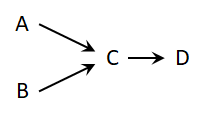

""El Pensamiento en
sistemas es una disciplina para ver "estructuras" que subyacen bajo
situaciones complejas y para discernir puntos de alto y bajo
apalancamiento"".
Peter
Senge
El desarrollo del
pensamiento sistémico comienza a partir de la década de
1950, con cada vez más influencia en la ciencia. Trata acerca
de la formulación de la lógica y la integración de
disciplinas para entender los patrones y relaciones de problemas
complejos, empleando diagramas conceptuales. El pensamiento
sistémico es también conocido como principios de
organización, teoría de la auto organización. Es una
ciencia basada en la comprensión de las conexiones y las
relaciones que existen entre cosas que aparentan estar aisladas
unas de otras. En términos técnicos, el pensamiento
sistémico, trata de entender las relaciones y patrones entre
los componentes en una red de relaciones, donde las propiedades
esenciales de un sistema complejo se deriva de su relación
interna (Capra, 1997). En términos generales el pensamiento en
sistemas refiere a modelos conceptuales y a la ciencia de la
lógica estructurada. Que también tiene una
aplicación práctica llamada dinámica de sistemas que
fue desarrollada en los años sesenta por Jay Forester en MIT.
La dinámica de sistemas se ocupa de la representación
matemática de nuestro modelos mentales y es un segundo paso
después de que hemos desarrollado nuestro modelo
mental.
Por otra parte el
enfoque de sistemas es complementario al enfoque analítico. El
enfoque analítico o reduccionista descompone un sistema en sus
elementos básicos para estudiar sus interacciones y deducir
leyes generales. Esto es efectivo en sistemas homogéneos con
interacciones débiles, donde se aplican fácilmente las
leyes estadísticas. Por otro lado, en sistemas altamente
complejos y heterogéneos con fuertes interacciones, las leyes
de la aditividad no son aplicables. Estos sistemas requieren un
enfoque sistémico, que considera el sistema en su totalidad,
su complejidad y dinámica.
La siguiente tabla,
contrasta aspectos, de ambos enfoques, de una forma dualista; y
establece una alternativa de la que parece difícil escapar.
Varios otros aspectos podrían destacarse, pero, aunque no es
exhaustiva, la tabla tiene la ventaja de contrastar de manera
efectiva los dos enfoques que se complementan entre
sí
|
El método analítico
|
El método sistémico
|
|

|
|
|
Pensamiento
orientado a eventos, todo puede ser explicado por una cadena de
causas. La causa raíz son los eventos que comienzan la cadena
como A y B
|
El comportamiento
del sistema emerge de la estructura de sus retroalimentaciones
circulares. La causa raíz no son los nodos individuales. Son
las fuerzas que emergen de una retroalimentación circular en
particular.
|
|
Aísla, y
luego se concentra en los elementos.
|
Unifica y se
concentra en las interacciones de los elementos.
|
|
Estudia la naturaleza de la
interacción.
|
Estudia los
efectos de las interacciones.
|
|
Pone énfasis
en la precisión de los detalles.
|
Pone énfasis en las percepción
global.
|
|
Modifica una variables por vez.
|
Modifica grupos
de variables de forma simultánea.
|
|
Se mantiene
independiente de la duración del tiempo, el fenómeno
considerado es reversible.
|
Integra la
duración del tiempo y la irreversibilidad.
|
|
Valida los
hechos, por medio de pruebas experimentales dentro de un marco
teórico.
|
Valida los hechos
a través de la comparación del comportamiento del modelo
con la realidad.
|
|
Utiliza modelos
precisos y detallados que no son muy útiles en la operatoria
actual (ej, modelos econométricos)
|
Utiliza modelos
que son insuficientemente rigurosos para ser utilizados como bases
del conocimiento, pero lo suficientemente útiles en la toma de
decisiones y la acción (ej, Club de Roma)
|
|
Es un método
eficiente cuando las interacciones son lineales y
débiles.
|
Es un método
eficiente cuando las interacciones son no lineales y
fuertes.
|
|
Deriva en educación por
disciplinas.
|
Deriva en una
educación multidisciplinaria.
|
|
Da lugar a
acciones programadas de forma muy detallada.
|
Da lugar acciones
guiadas por objetivos.
|
|
Posee
conocimiento de los detalles y objetivos pobremente
definidos.
|
Posee
conocimiento de objetivos, y detalles un tanto
difusos.
|
REFERENCIAS
Richmond B.
1991
Richmond
B.
Richmond B.
1994.